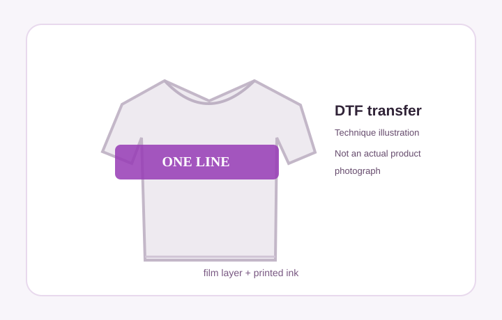
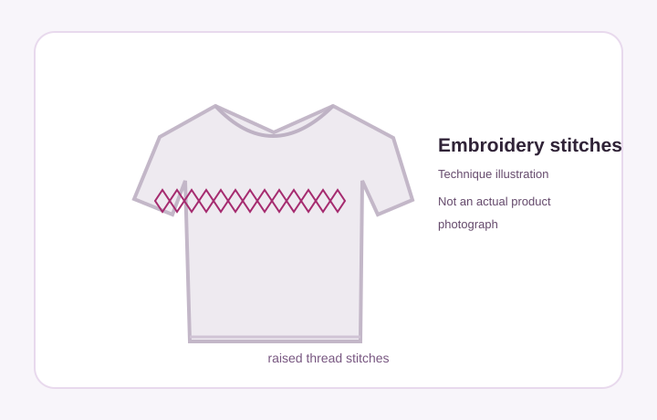
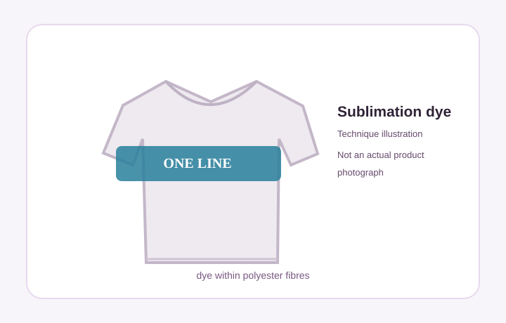
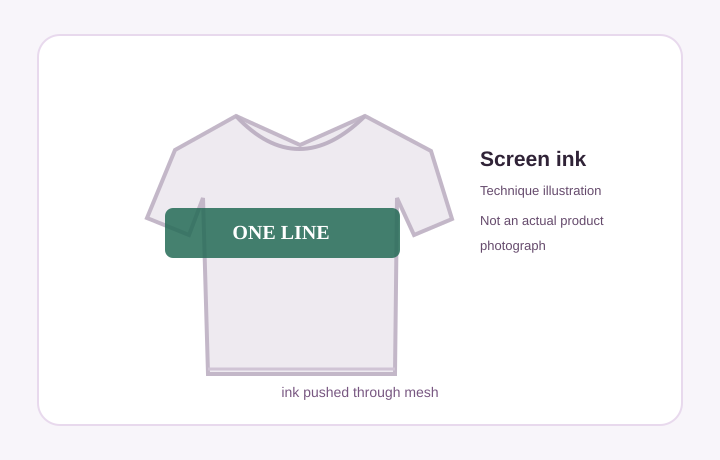

Printing types and finishes
See how each print technique works and what the finish can look and feel like. The diagrams are references, not real samples; fabric, printing equipment and artwork affect the final result.
DTF Print

How it works
Direct-to-film transfer uses coloured ink printed onto a special film, with adhesive powder and a heat press transferring the artwork to the cloth.
Expected look and feel
Smooth, slightly raised print, good for full-colour logos and fine details. Turn garment inside out to care for the print.
Confirm exact hand-feel, stretch, washing care and fabric compatibility with the shop.
Embroidery

How it works
A machine creates the design from coloured stitches that are sewn directly through the garment.
Expected look and feel
Raised thread texture and a premium stitched appearance. Tiny lettering, gradients and fine lines may require simplification.
Ask for stitch count, backing, thread colours and a real sample.
Sublimation

How it works
Heat converts dye into gas that bonds with compatible polyester fibres.
Expected look and feel
No thick surface layer on suitable light polyester garments; bright, integrated colours. Dark cotton is generally unsuitable.
Confirm polyester content, base colour and whether all-over print is available.
Screen Print

How it works
A stencil/mesh screen transfers ink onto the fabric, usually one pass or screen per colour.
Expected look and feel
Solid colour areas with a soft-to-raised feel depending on ink type and deposit. Well suited to repeat runs.
Ask whether plastisol, water-based or another ink is used; they feel different.
Other printing technique
Print appearance depends on the method, garment and artwork. Please ask the store for an actual printed sample before bulk production.